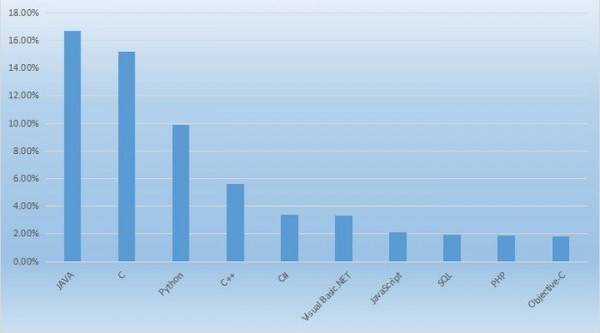
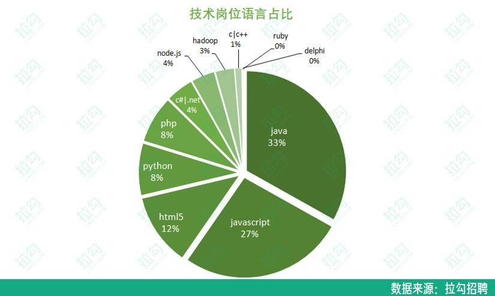

- 01 阅读此专栏的正确姿势.md.html
- 02 环境准备：千里之行，始于足下.md.html
- 03 常用性能指标：没有量化，就没有改进.md.html
- 04 JVM 基础知识：不积跬步，无以至千里.md.html
- 05 Java 字节码技术：不积细流，无以成江河.md.html
- 06 Java 类加载器：山不辞土，故能成其高.md.html
- 07 Java 内存模型：海不辞水，故能成其深.md.html
- 08 JVM 启动参数详解：博观而约取、厚积而薄发.md.html
- 09 JDK 内置命令行工具：工欲善其事，必先利其器.md.html
- 10 JDK 内置图形界面工具：海阔凭鱼跃，天高任鸟飞.md.html
- 11 JDWP 简介：十步杀一人，千里不留行.md.html
- 12 JMX 与相关工具：山高月小，水落石出.md.html
- 13 常见的 GC 算法（GC 的背景与原理）.md.html
- 14 常见的 GC 算法（ParallelCMSG1）.md.html
- 15 Java11 ZGC 和 Java12 Shenandoah 介绍：苟日新、日日新、又日新.md.html
- 16 Oracle GraalVM 介绍：会当凌绝顶、一览众山小.md.html
- 17 GC 日志解读与分析（基础配置）.md.html
- 18 GC 日志解读与分析（实例分析上篇）.md.html
- 19 GC 日志解读与分析（实例分析中篇）.md.html
- 20 GC 日志解读与分析（实例分析下篇）.md.html
- 21 GC 日志解读与分析（番外篇可视化工具）.md.html
- 22 JVM 的线程堆栈等数据分析：操千曲而后晓声、观千剑而后识器.md.html
- 23 内存分析与相关工具上篇（内存布局与分析工具）.md.html
- 24 内存分析与相关工具下篇（常见问题分析）.md.html
- 25 FastThread 相关的工具介绍：欲穷千里目，更上一层楼.md.html
- 26 面临复杂问题时的几个高级工具：它山之石，可以攻玉.md.html
- 27 JVM 问题排查分析上篇（调优经验）.md.html
- 28 JVM 问题排查分析下篇（案例实战）.md.html
- 29 GC 疑难情况问题排查与分析（上篇）.md.html
- 30 GC 疑难情况问题排查与分析（下篇）.md.html
- 31 JVM 相关的常见面试问题汇总：运筹策帷帐之中，决胜于千里之外.md.html
- 32 应对容器时代面临的挑战：长风破浪会有时、直挂云帆济沧海.md.html
- 捐赠
01 阅读此专栏的正确姿势
课程背景
近些年来，无论是使用规模、开发者人数，还是技术生态成熟度、相关工具的丰富程度，Java 都当之无愧是后端开发语言中不可撼动的王者，也是开发各类业务系统的首选语言。
时至今日，整个 IT 招聘市场上，Java 开发工程师依然是缺口最大，需求最多的热门职位。另外，从整个市场环境看，传统企业的信息化，传统 IT 系统的互联网化，都还有非常大的发展空间，由此推断未来 Java 开发的市场前景广阔，从业人员的行业红利还可以持续很长时间。
从权威的 TIOBE 编程语言排行榜 2019 年 11 月数据来看，Java 的流行程度也是稳居第一。


拉勾网 2019 年 9 月统计的招聘岗位比例，也可以看到 Java 和 JavaScript 是最高的，不过 Java 的求职难度只有 JavaScript 的 1/7。

Java 平均一个岗位有 4 个人竞争，而 JavaScript 则是 28 个，Perl 最夸张，超过 30 个。

而通过职友网的数据统计，北京、上海、杭州、深圳的 Java 程序员平均薪酬在 16-21K 之间，在广州、成都、苏州、南京等城市也有 11K-13K 的平均收入，远超一般行业的收入水平。

所以学习 Java 目前还是一个非常有优势的职业发展选择。
而了解 JVM 则是深入学习 Java 必不可少的一环，也是 Java 开发人员迈向更高水平的一个阶梯。我们不仅要会用 Java 写代码做系统，更要懂得如何理解和分析 Java 程序运行起来以后内部发生了什么，然后可以怎么让它运行的更好。
就像我们要想多年开车的老司机，仅仅会开车肯定不能当一个好司机。车开多了，总会有一些多多少少大大小小的故障毛病。老司机需要知道什么现象说明有了什么毛病，需要怎么处理，不然就会导致经常抛锚，影响我们的行程。
本课程就是用来教会我们怎么能够去了解 JVM 这辆优秀跑车的一些原理和怎么去用各种工具分析修理它。
课程特点
市面上各类 JVM 相关的资料虽多，但是明显存在两个极端：过于生涩难懂，或者流于某个技巧点而不系统化。同时各大公司也都越来越重视推动和发展 JVM 相关技术，一线大厂技术面试现在 JVM 知识也是必考科目。
在这个背景下，我们全面梳理了系统化学习 JVM 的知识和经验，包括 JVM 的技术和内存模型，JVM 参数和内置工具，GC 算法，GC 日志、内存和线程等相关问题排查分析，以及常见的面试问题深度剖析等高级的进阶方法与实战，既满足大家快速系统化学习和全面掌握知识的需求，又兼顾大家的面试经验辅导。
- 通过体系化的学习，了解一般原理，知其然知其所以然；
- 熟悉工具和方案，知道从何下手，工作中如何分析和解决问题；
- 随着课程的演示和练习，加深理解，不管大家之前的基础如何，都能够融会贯通；
- 面试题的解析部分，会根据大家的反馈进行持续更新，长期助力于大家的学习和进步。
本课程的特点可以总结为 16 个字：
体系完整、层次分明、深入浅出、实践为要
为什么做这门课
最近有人问我，程序员多以高深技术为尊，为什么你要做 JVM 的一个偏向于基础和实际应用的专栏，而不是一个讲 JVM 内部实现的各种底层原理，或者是高深的各种算法原理之类的内容。
我在此想说一下我对这个问题的想法：
我个人一直认为，技术应该有两方面，有一小部分人去做高精尖的，以理论为主，更多的人以把技术应用到实际工作、改进效率、提高生产力，以实用为主。这也契合了技术大牛史海峰老师经常说的一句话，架构师应该是一个胸怀理想的实用主义者。
所以，我们再这个课程里，只给大家呈现那些对大家的工作和其他方面，应该会有用的东西，脚踏实地的东西，不管是技术点，还是经验之谈，虽有少量的前瞻性介绍和展望，但是主线一定是偏向于基础和实际应用的。
前一阵在网上听樊登老师的演讲，他提到的一个东西方教学的差异。国人教学、传授知识，喜欢按孔子、老子的这一套，讲究悟性，说一句话就很高深，让人摸不着头脑，然后你要是有悟性，就能悟到真理，悟不到就说明还需要加倍努力。
而西方从苏格拉底、柏拉图、亚里士多德起，就喜欢用逻辑，第一步是这样，第二步是那样，第三步要是发现第一步不完善，那么 OK，我们就可以去改善第一步，然后继续第二步，第三步……这样我们的知识体系就会慢慢的越来越完善，厚实，接近真理，并且这个方法是可以复制的。
所以我们公司技术委员会就组织了一些一线的技术人员，在我们的研发团队实验了几期 4~6 课时，每次 2 小时的“知识+实践”课程，并且受到了良好的效果和积极的反馈。
恰好当时内部培训的时候，《JVM 基础入门》这门课是我和富飞一起组织的，富飞在以往的工作经历中，翻译和撰写了不少 JVM 相关的技术文章和博客，在 JVM 方面积累了大量的一手经验和技巧。
知识这种东西，独乐乐不如众乐乐，一个人会了它的价值就有限，我们在公司内部做了培训也还是只影响了参加培训的百八十个人。如果把 JVM 的内容进行更加完整的整理加工，再融合目前行业里大家最关心的各类问题，变成一个公开的课程，那么就可以影响到更多的人，产生更大的价值，对大家都有益，这是一个多赢的事情（这也是史老师那句话的前半句里的“胸怀理想”吧）。
基于这些原因，大家一拍即合，于是就有了这个课程跟大家见面。我们相信这门课程，一定不会让大家失望。
课程内容
本课程分为两部分，基础知识篇主要介绍 JVM 的基础知识、JDK 相关的各种工具用法，深入分析篇讲解各种 GC 算法、如何进行 JVM 的 GC 日志、线程、内存等各类指标进行分析和问题诊断，再结合作者的实际分析调优经验，以及对于常见的 JVM 面试问题进行分析和解答，为学习者梳理清楚 JVM 的整体知识脉络，带来最全面的 JVM 一线经验和实用技巧。
本次分享您将了解以下内容（22 课时）：
基础知识篇
- 环境准备：千里之行，始于足下
- 常用性能指标：没有量化，就没有改进
- JVM 基础知识：不积跬步，无以至千里
- Java 字节码技术：不积细流，无以成江河
- JVM 类加载器：山不辞土，故能成其高
- JVM 内存模型：海不辞水，故能成其深
- JVM 启动参数详解：博观而约取、厚积而薄发
- JDK 内置命令行工具介绍：工欲善其事，必先利其器
- JDK 内置图形界面工具介绍：海阔凭鱼跃，天高任鸟飞
- JDWP 简介：十步杀一人，千里不留行
- JMX 与相关工具：山高月小，水落石出
深入分析篇
- 常见的 GC 算法介绍（Parallel/CMS/G1）：温故而知新
- Java11 ZGC 和 Java12 Shenandoah 介绍：苟日新、日日新、又日新
- Oracle Graalvm 介绍：会当凌绝顶、一览众山小
- GC 日志解读与分析：千淘万漉虽辛苦，吹尽狂沙始到金
- JVM 的线程堆栈等数据分析：操千曲而后晓声、观千剑而后识器
- 内存 dump 和内存分析工具：万里赴戎机、关山度若飞
- fastthread 相关的工具介绍：欲穷千里目，更上一层楼
- 面临复杂问题时的几个高级工具：它山之石，可以攻玉
- JVM 问题排查分析调优经验：纸上得来终觉浅，绝知此事要躬行
- JVM 相关的常见面试问题汇总：运筹策帷帐之中，决胜于千里之外
- 应对容器时代面临的挑战：长风破浪会有时、直挂云帆济沧海
送给大家的话
俗话说，“活到老、学到老”。IT 行业的技术发展和创新速度太快，新的知识很快成为老知识，新的技巧很快成为旧把式，只有终身学习才能适应技术本身的发展。同时现在随着网络的发展，特别是各类新的内容平台和媒体的涌现，信息不是太少了，而是太多了。
信息爆炸带来了甄别有用信息的过程成本增加，这时候选择好的学习途径、学习内容就跟学习方法一样重要，为大家系统化的总结经验和传播知识也同样变得很重要。
让我们一起在 GitChat 平台不断学习，跟志同道合的同学们一起努力，共同进步。
© 2019 - 2023 Liangliang Lee. Powered by gin and hexo-theme-book.